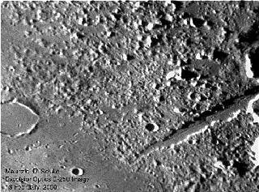

There are two classic really tough lunar tests of seeing and optics. If you hang around with moonies long enough, you'll start to hear discussion of them (and maybe already have): the craterlets in Plato and the rille in the Alpine Valley. Of course, there are others. And of course, I'll mention a few of them. But right now, we're going to deal with these two 'classics.' First, the craterlets in Plato. They're small, but can be resolved not only as dark marks, but five (at least) can be resolved with detail enough to see their rims in just the right light. I have seen claims of up to 11 craterlets resolved, and my own very best run is only seven. Sometimes you'll look at the floor of this crater with even the finest telescope and see no craters at all. That tells you a little something about the seeing (it's bad). Other times you'll score four (or more) with fairly modest aperture. A few years back they were under such odd, cooperative light that I'm fairly sure the five majors would have shown easily in an 80mm scope. So if you see that many, or more, it really doesn't necessarily mean you have 1/20 wave optics - the light angle is also critical, but not predictable. Sometimes they show well with very low light (though this condition usually hides at least one of the craters in shadow). Sometimes they show best as light marks at high illumination. And just about anything in between. So there's no easy way to predict when it's best to look, nor is it clear that this particular test establishes anything about optics or observational skill, though it does serve as a positive indicator of seeing on most nights (if you can see any of them, it's probably not too bad). But hidden in this morass of nitpickiness is a true challenge: two of the larger craterlets are right next to each other, separated (as far as I can tell) by about their own diameters. Usually, folks will think they are just one crater (the largest). I'm not going to point out which one it is - though it's easy enough to see on a good chart - but if you can "split the double" ... then you have indeed done something of note.
|  |
So, why do people do these things? Beats me. Why climb Everest? In my own case, I just glance because it's there. Sometimes you see it, usually you don't. It's an old habit, formed when I first started tracking it down. Took me quite a while - all I had in those days was a 4.5-inch reflector (which I still have and use). Are there other "classics?" Well, maybe. The crater Linne itself (not the halo) is sometimes seen as a hard shot. Several other rilles also qualify, and perhaps the catena in Rimae Hyginus qualifies (though they are really quite easy in any kind of good light and seeing). But for some reason, there are folks out there who will count the craters in Clavius (a monster that really, you must see). This one I don't get at all ... if you get decent seeing, you'll run out of fingers and toes and noses and eyes and have to start making hash marks on the back of your hand or something.... ...but heck, if you get over a hundred, that's probably a pretty good night.